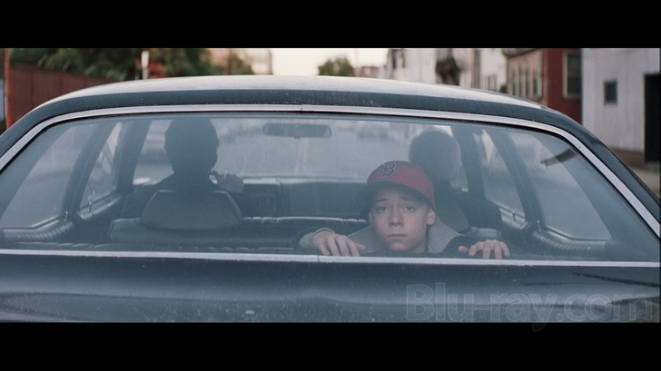
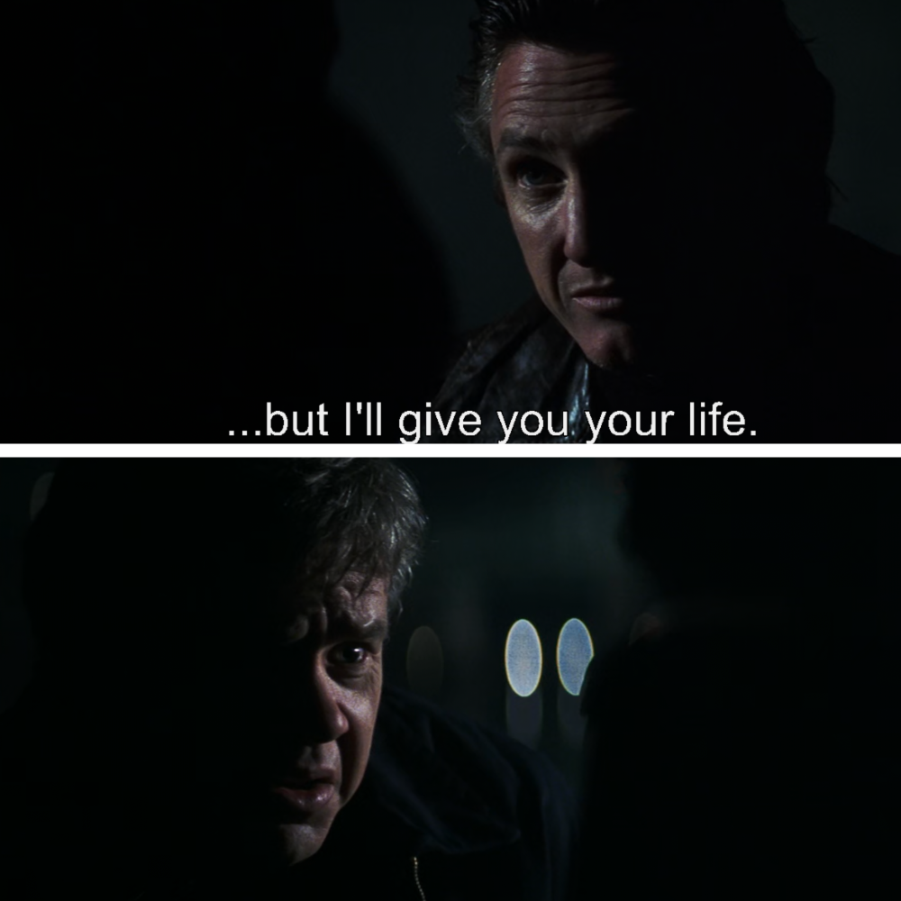

⚠️ WARNING: SPOILERS AHEAD
The following article contains heavy plot spoilers for the book and movie Mystic River.
—
Mystic River is one of the most famous books of the 21st Century. Written by Dennis Lehane (author of Shutter Island), it is one of the best psychological thrillers out there to read. The story follows three complex characters: Dave Boyle, a murder suspect; Jimmy Markum, the victim’s father; and Celeste Boyle, Dave’s wife. It all starts with a single, random moment: three boys are standing on a sidewalk when a car pulls up. Dave is abducted by two people posing as cops and held for four days until he finally escapes. This incident breaks Dave for life. Years later, Jimmy’s daughter, Katie, is murdered. On that same night, Dave returns home covered in blood with a wound in his stomach. Because Dave was already "broken" by his past, his own wife, Celeste, spends the rest of the book suspecting him. In the end, Jimmy kills Dave for a crime he didn't commit, only to find out Katie’s death was a simple accident with no hidden agenda.

We often tell ourselves that we are here for a reason or that our lives have a specific purpose. However, the reality presented in Mystic River is that life is simply a chain of multiple Butterfly Effects. The random events that happen to us shape the trajectory of our entire existence. As cruel or sad as it may sound, it is just a fact.
Dave’s abduction wasn't part of some grand, cosmic plan; it was a random incident. It could have been anyone on that sidewalk, but it happened to be him. That one moment defined his life and how he lived for the next thirty years. Similarly, Katie’s murder wasn't the work of a criminal mastermind or a grand plot; it was a senseless accident.
The tragedy of the book lies in the characters searching for meaning or purpose:

In the end, the world moves on. The sun stays up, the music plays, and the river continues to flow. There is no cosmic justice for Dave, and there is no grand epiphany for the survivors. The "Butterfly Effect" that began with a car door opening thirty years ago finally reaches its end, leaving behind a wake of broken people while the rest of the world remains indifferent. We want our pain to have a purpose, but often, we are just caught in the current of a river that doesn't care where it is going.